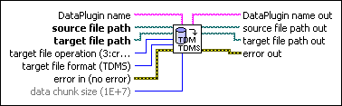
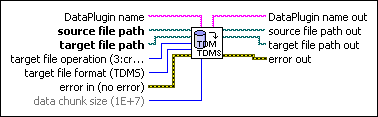

Convert to TDM or TDMS VI
Owning Palette: Storage/DataPlugin VIs
Requires: Base Development System (Windows)
Converts the specified file to the .tdm or .tdms file format.

 Add to the block diagram Add to the block diagram |
 Find on the palette Find on the palette |
Owning Palette: Storage/DataPlugin VIs
Requires: Base Development System (Windows)
Converts the specified file to the .tdm or .tdms file format.

| Add to the block diagram |
Find on the palette |
 |
DataPlugin name specifies the name of the DataPlugin that determines the storage format of the data file. Use the List DataPlugins VI to obtain the names of all DataPlugins installed on the local computer. If you do not wire data to this input or if you wire an empty string to this input, this VI automatically detects the storage format of the data file. | ||||||||||
 |
source file path specifies the path to the data file you want to convert. | ||||||||||
|
target file path specifies the path to the new .tdm or .tdms file you want to create. | ||||||||||
 |
target file operation specifies the operation to perform.
|
||||||||||
|
target file format specifies the target file format to which you want to convert the data file.
|
||||||||||
 |
error in describes error conditions that occur before this node runs. This input provides standard error in functionality. | ||||||||||
 |
data chunk size specifies the number of values to read into memory at a time until this VI finishes reading all values. If you have enough system memory, use a higher number than the default value to achieve better performance. The default is 1E+7. | ||||||||||
 |
DataPlugin name out returns DataPlugin name unchanged. If you do not wire the DataPlugin name input or if you wire an empty string to this input, DataPlugin name out returns the DataPlugin name that this VI detects automatically. | ||||||||||
 |
source file path out returns source file path unchanged. | ||||||||||
|
target file path out returns target file path unchanged. | ||||||||||
 |
error out contains error information. This output provides standard error out functionality. |